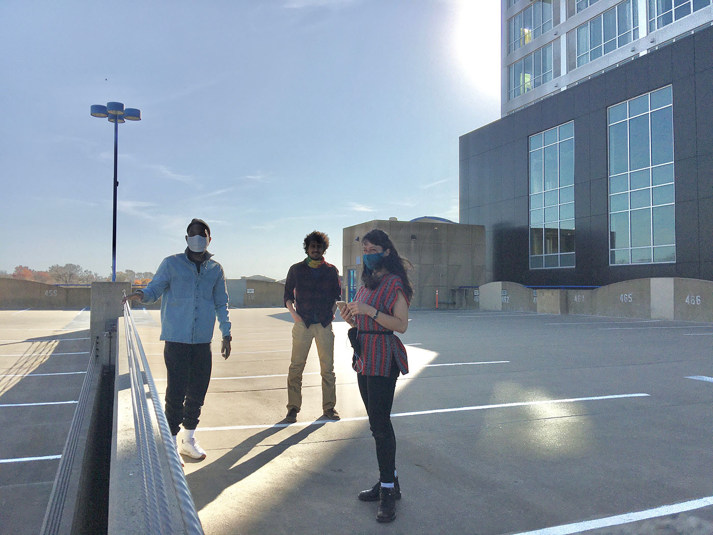

Map
 Hover and click on the icons to view audio from the different locations or start tabbing to move sequentially through the links.
Click on the spaces to view project pages
Hover and click on the icons to view audio from the different locations or start tabbing to move sequentially through the links.
Click on the spaces to view project pages
000
001
002
003
004
005
006
007
008
009
010


Team

Pictured from left to right: Steven, Ramin, and Stephanie standing on the roof of the Chauncey Swan Parking Ramp located in Iowa City, Iowa.
Storyteller Steven Willis uses his poetic and theatrical background to embark on the daunting task of creatively articulating African American culture. With art heavily influenced by urban life and religion, Steven mixes elements of hip hop, poetics, and theatrical performance with formal teaching of anthropology and political theory to help express his eclectic personal narrative. Willis is a contributing writer to the Breakbeat Poets Anthology, NYU’s National Council for Teachers of English Journal, is a 3-time individual world poetry slam finalist and formal resident Poet of the Nuyorican Poet’s Café. He MFA in acting from the University of Iowa in 2021 and is a Iowa Writers Workshop Fellow.
stevenwillispoetry.com
stevenwillispoetry.com
Ramin Roshandel is a PhD candidate in the Composition program at the University of Iowa, whose music is based around incorporating ‘experience’ as a fundamental concept although through a non-experimental approach in performance. Considering phenomena such as instability, cultural identity, and communicational language on one hand, and being inspired by Iranian music microtones as a setār (an Iranian instrument) player on the other, leads him to consider indeterminate, improvisatory, and abstract structures in his music; in contrast, or alongside post- or non-tonal structures.
soundcloud.com/ramin-roshandel
soundcloud.com/ramin-roshandel
Stephanie Miracle’s choreography has been described as, “iconic and nuanced…with an irreverence that makes you smile unconsciously,” (Rick Westerkamp review of GROOVE, 2014). Her process is dedicated to the concept of abundant possibility found within awareness and play in the everyday setting. These works manifest through site-specific happenings, sound installations, experimental films and live stage performances. Her projects have been presented in Germany, Ireland, Portugal, Italy, Mexico, Russia, Turkey, Hungary, New York City, Los Angeles, and Washington, DC. She was a Fulbright Fellow to Germany from 2014-15 and has an MFA in Dance from the University of Maryland. She is a Visiting Assistant Professor in Dance at University of Iowa.
stephaniemiracledances.com
stephaniemiracledances.com
Access
Listening & Locations
All listening locations are wheelchair accessible and available for public listening 24/7.All listening experiences are all ages friendly.
All tracks are downloadable.
All listening experiences have also been transcribed and are available as a pdf or docx on each “parking spaces” page.
MP3 player and Headphone Rental
If you cannot access wifi or do not have a phone with internet connection you may check out preloaded mp3 players, headphones and paper maps at our two partner locations: ICPL and PPublic Space One. These devices can be checked out for free.Public transportation & parking
Bus routes to downtown Iowa City can be found hereA map of public parking ramps in downtown Iowa City and more information can be found here
Bathrooms
Nearby public bathrooms can be found in the ICPL, Chauncey Hotel/Film Scene, and in the Old Capitol Town Center Mall.Thank you/Additional info
Thank you to our Community and Access consultants: Chuy Renteria, Kayla Hamilton, and Bailey Anderson.For any access needs write to miraclestephanie@gmail.com. Please allow 24 hours for response.
Acknowledgement Acknowledgement Ack.
Land
As you listen to each Parking Space we invite you to consider what "public space" means to you.We acknowledge that this land, known as Iowa City, was stolen from the indigenious people of the Sac and Fox of the Mississippi in Iowa, Očhéthi Šakówiŋ, Kiiappoi, Omaha, Sioux, Otoe, Iowa, Ponca, Winnebago, Menominee, Osage, Potawatomi, Ottawa, Missouri tribes. Much violence and injustice has occurred on this land. We are asking ourselves how we can do more to learn from and from the land itself about its history, its present, and its future. Want to learn more and to help? Check out these links...
Meskwaki Nation, those still living and cultivating this land
Indigenous Peoples Art Gallery and Cafe
Indigenous Art Alliance
PAYPAL: indigenousartgallery
VENMO: ddavenport2021